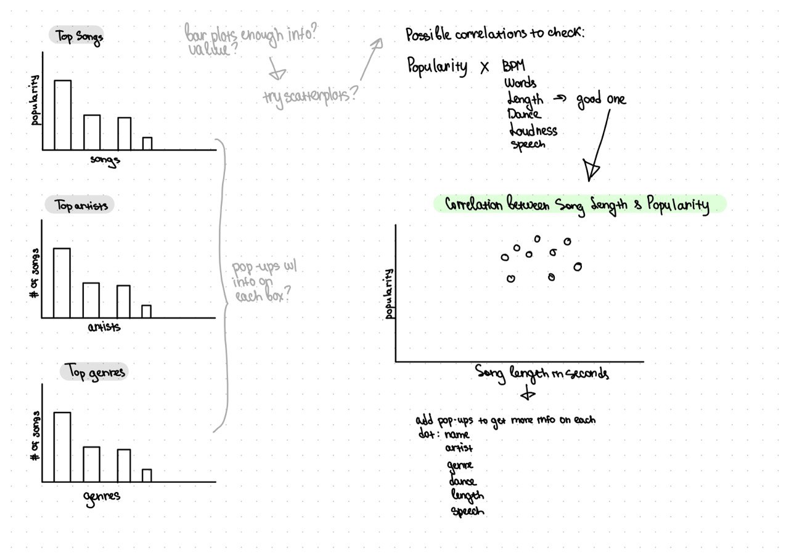
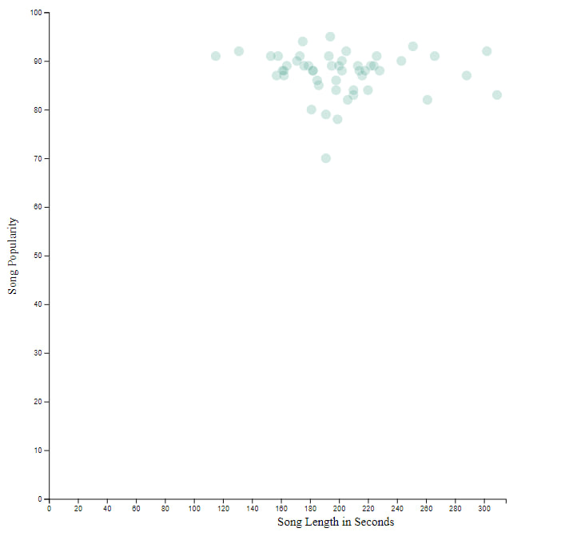

I started with finding a dataset that would be interesting to visualize for this project. After some dataset exploration I came across the Top 50 Spotify Sings in 2019 dataset. The dataset available at Kaggle contains information about the top 50 most streamed songs on Spotify in the year 2019. The dataset consists of 50 rows, each corresponding to one song, and 14 columns providing information about each song, including the track name, artist name, genre, beats per minute (BPM), energy, danceability, loudness, speechiness, acousticness, instrumentalness, liveness, valence, length, and popularity. I thought it would be interesting to visualize it and started the design process.
At first, I was focused on the “top” aspect of the dataset and brainstormed some of the ways I could visualize top songs, artists or genres via box plots. However, none of that seemed interesting enough for the final project. So, I decided to play around with data in Excel to see if there any any interesting correlations between the numeric variables. After some exploration I found a tendency between song length and popularity. That’s why I decided to take those variables into the interactive scatterplot for the final project.
Sketches

After deciding on the chart type and the used variables I brainstormed how I could bring additional value to the visualization. I’ve always enjoyed informational pop-ups on interactive charts, that’s why I decided to go for those in my visualization. I believe that hovering over dots on scatterplots to see more information on the dot is a fun way to get users engaged, while not overloading the chart with way too much information.
As for the website itself, I decided to engage green color into to the coloring to highlight Spotify’s identity – incorporating green in design and the scatterplot. I also added header and footer to the website to allow for easier navigation.
Overall, I am satisfied with the results of the project in terms of the visualization. Obviously, there are some things that could go better – such as the information pop-ups – they took me a long time to get around. Eventually I’d want to learn more about those and make them more streamlined for the user.
Initially I had a hypothesis that songs under 3 minutes would be the most popular due to the decreasing attention span. While based on the scatterplot, we can observe that there is a very weak positive correlation between song length and popularity. The correlation coefficient between these two variables is only 0.059, which indicates a very weak positive correlation. Yet, at the same time it can be seen that bigger number of songs in the Top 50 falls into the 3 to 3.5 minutes range. This finding surprised me, as well as some longer songs that are some of the most popular ones. If I were to go even deeper with this analysis, I’d visualize multiple scatterplots to look at the question multi-dimensionally.
Screenshot
